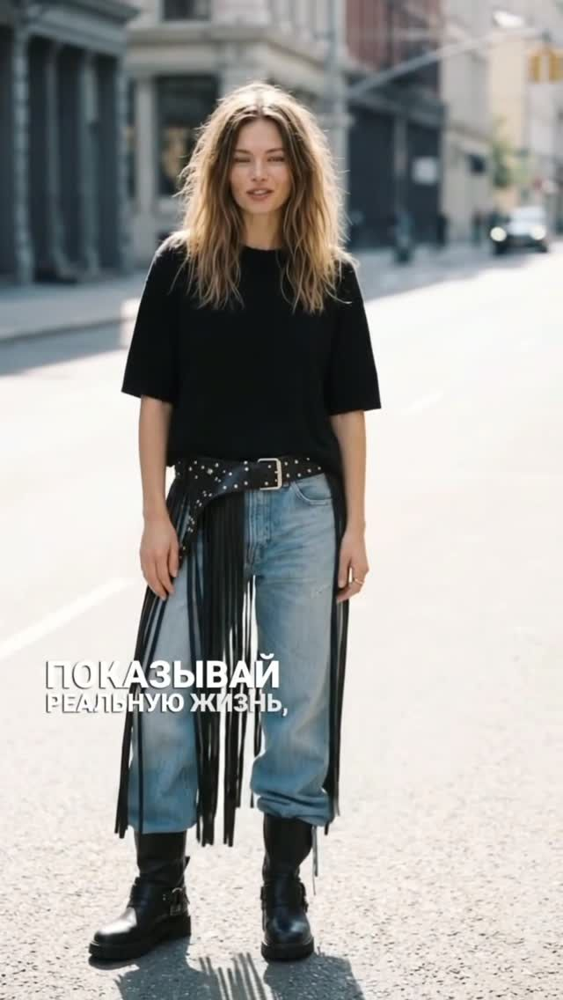
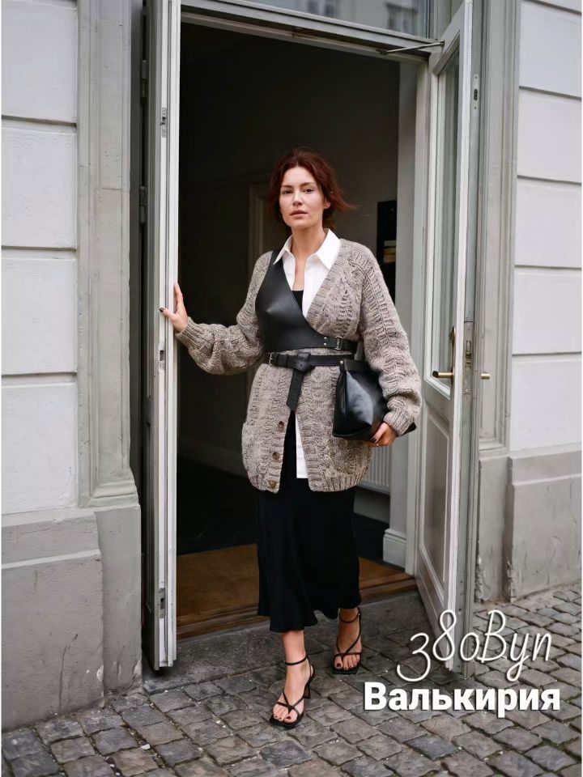
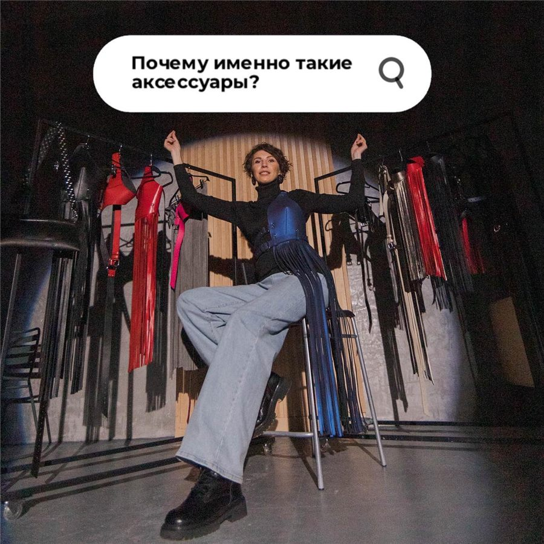
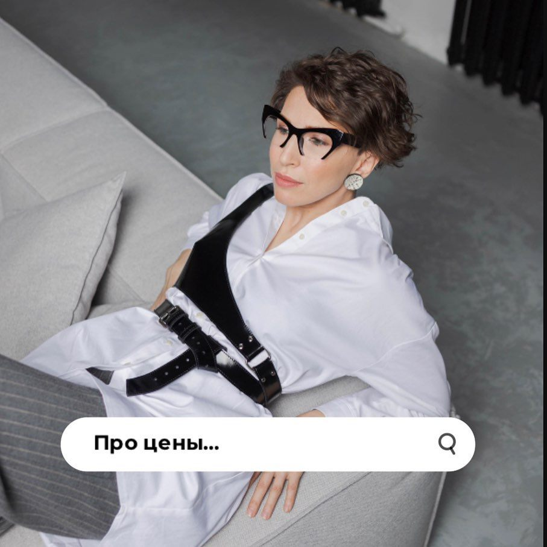
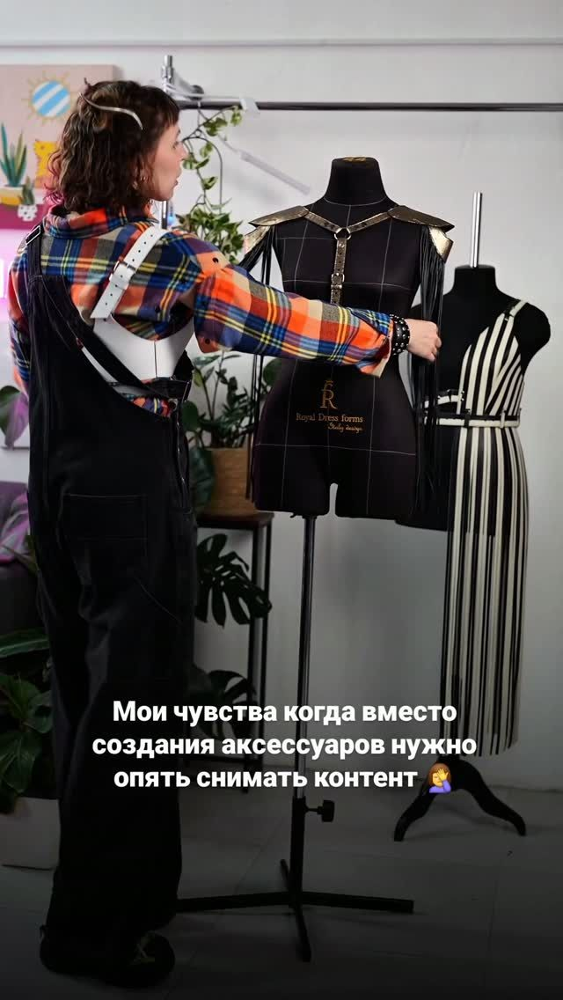

01 Доспехи
Собирают образ.
Включают уверенность.
Так Катя сама описывает свои вещи в шапке профиля. Портупея поверх рубашки, ремень с бахромой на джинсах, портупея поверх кардигана — один кожаный акцент, и образ собран.


а мир привыкнет
Юбка-сетка — лёгкая, не сковывает движения и дружит с повседневными вещами. Её любимый аксессуар.
02 Мои роли
Сильная
«Какая она сильная и дерзкая. 100% решает любой вопрос движением брови».
— так, по словам Кати, думают новые подписчики

Стеснительная
«Как бы не так. В реальной жизни я очень стеснительная и застенчивая».
Разговор с незнакомцем — стресс. «Я умею любую ситуацию превратить в конец света». С этого признания начинается её пост «Почему я шью именно такие аксессуары?».
Собирают образ.
Включают уверенность.

но цены...
Так ей однажды написали. Катя ответила постом о том, из чего складывается прайс.
03 Цены
Почему такие цены
Только качественная натуральная кожа. А она сама по себе стоит немало.
Чтобы изделие было жёстким, держало форму и не пачкало одежду, Катя делает двойную обшивку.
Что уже названо в постах
- Ремень Дуо, талия 70–80 см
- 195 Byn (5 300 ₽)
- Аксессуар из кожи к образу с баской
- 345 Byn
- Юбка-сетка
- 395 Byn
Остальное — в хайлайте «Цены» и в посте-подборке «В наличии» в Instagram.
04 Как купить?
Подогнать доспех
Четыре шага — и у вас готовое сообщение Кате. Заказ она принимает в Direct.
В наличии
«Собрала здесь аксессуары в наличии с ценами и размерами» — пост-подборка и хайлайт «Кожа в наличии» в профиле.
05 За кадром
Как я докатилась до такой жизни
Не сказка и не «успешный успех». Катя шла к портупеям очень долго и до последнего не знала, что получится.
Мой план на сегодня:
- Сделать шикарный кожаный доспех.
Снять про него крутой рилс.
Что произошло в реальности:
3 часа съёмки, трендовый танец, переходы, лучший образ. Пост набрал 3 лайка: два от подписчиков и один от прохожего, который промахнулся мимо кнопки «подписаться».
Зато у меня идеально
сидит доспех.

опять снимать контент